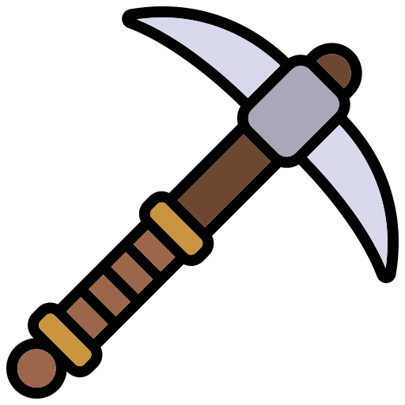

Добро пожаловать на SCATcraft – ваш проводник в мире Minecraft! Здесь вы найдете подробные гайды, справочники по биомам и структурам, информацию о рудах, мобах, эффектах и многое другое.
 Что вас ждет?
Полезные гайды по механикам игры
Список модов с описанием и ссылками
Подробные справочники по блокам, структурам и мобам